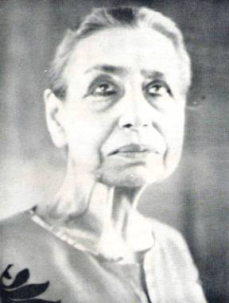

Editorial

THE MOTHER
(December
30, 1972)
The Mother: So it is
going to be the new year ...
Question : Do you feel
anything for the new year?
(After a silence)
The Mother: Things have taken
an extreme form, so there is as it were an uplift of the atmosphere towards a
splendour…almost inconceivable and at the same time the feeling that at any
moment one may... one may die–not “die” but the body be dissolved. And so the
two at the same time form a consciousness (Mother shakes her head) all the old
things seem puerile, childish, unconscious–within there ... it is tremendous
and wonderful.
So, the body, the body
has one prayer–and it is always the same:
Make me worthy of
knowing You,
Make me worthy of
serving You,
Make me worthy of being
You.
I feel in myself a
growing force...but it is of a new quality...in silence and in contemplation.
Nothing is impossible
(Mother opens her hands upward).
(Silence)
It was on the eve of the
New Year, 1973, that the Mother had given this hint–that it was not
unlikely for her to give up her body during the year that was setting in. The
year 1972 had seen her in her natural resplendent form–inspiring and
guiding her children in the Ashram and all around the world at many levels of
their need–for it was the great year of Sri Aurobindo’s Birth Centenary.
In this background it was not unnatural for most of us to miss the import of
the hint.
Nevertheless, a simple
question wells up from many a mind: Victory over death was a set goal of the
Yoga of Sri Aurobindo. How is it then that both the Master and the Mother of
the Yoga had to leave their bodies?
The Yoga of Sri
Aurobindo was meant for making man grow into a divine consciousness–for
ushering in a new phase in the evolution–for an ascent from darkness
into light, from ignorance into true knowledge. Death itself was a result as
well as a form of ignorance. “Death is a question Nature puts continuously to
Life and her reminder to it that it has not yet found itself.”
But this need not be a
settled fact unto eternity. There would be a day when man would possess a true
life–a life free from falsehood and ignorance. It is only then that he
could rise above the tyranny and obstinacy of death. May be the day is far off,
but its advent is assured.
So, it is not the
popular notion of immortality which holds any good here. It will perhaps be
proper to say that immortality will be one of the several marked traits of that
hitherto unrealized phase in evolution–the supramental phase–and
“the supratmental change is a thing decreed and inevitable in the evolution of
the earth-consciousness.”
Sri Aurobindo and the
Mother were doing their tapasya to bring down this supramental
consciousness onto the earth-nature. The marvel the advent of this
consciousness can achieve is termed by them as the transformation. Man, at
present, “only partly liberated from the animal involution”, can then transcend
himself and evolve into a much greater being. Birth and death–in between a life
lived either happily or unhappily–need not be the unalterable epitome of
human life. Man’s destiny carries a promise sublime.
Sri Aurobindo and the
Mother have revealed that promise to us and have done all that was necessary
for the fulfilment of that promise. Their experiences and achievements have
been too profound, too mystic for the language we understand.
“The supermind alone can
transform the lower nature.” On the other hand the present condition of the
world was by no means congenial to the manifestation of this power. It was
through such an extraordinary situation or paradox that Sri Aurobindo and the
Mother had to negotiate their tapasya. They had to invoke and hold this
mighty power of Truth in their divine bodies–a power which coming in contact
with the gross falsehood of the earth could have shattered the latter
otherwise. But the power would work out its miracle in a natural way now that
it had found a home in Sri Aurobindo and the Mother amidst this alien earth
domain.
How this force has
worked and is working is primarily a matter of experience although much idea
can be formed about it from the works and letters of Sri Aurobindo and the
Mother. What the Mother has achieved for us in her being and body, will perhaps
take a long time to be felt and realised by humanity, although all who
turn inwardly towards her will not lack in an inner conviction and a sure touch
of the truth.
The world, despite its
appearance, is never the same after the advent of Sri Aurobindo and the Mother.
Sri Aurobindo Ashram –MANOJ DAS
Pondicherry Guest Editor
* It is significant in this context, to remember
what Sri Aurobindo says in a foot-note in The Life Divine: “Even if
science–physical science or occult science (Italics ours)–were
to discover the necessary conditions or means for an indefinite survival of the
body, still, if the body could not adapt itself so as to become a fit
instrument of expression for the inner growth, the soul would find some way to
abandon it and pass on to a new incarnation. The material or physical causes of
death are not its sole or its true cause; its true inmost reason is the
spiritual necessity for the evolution of a new being.”